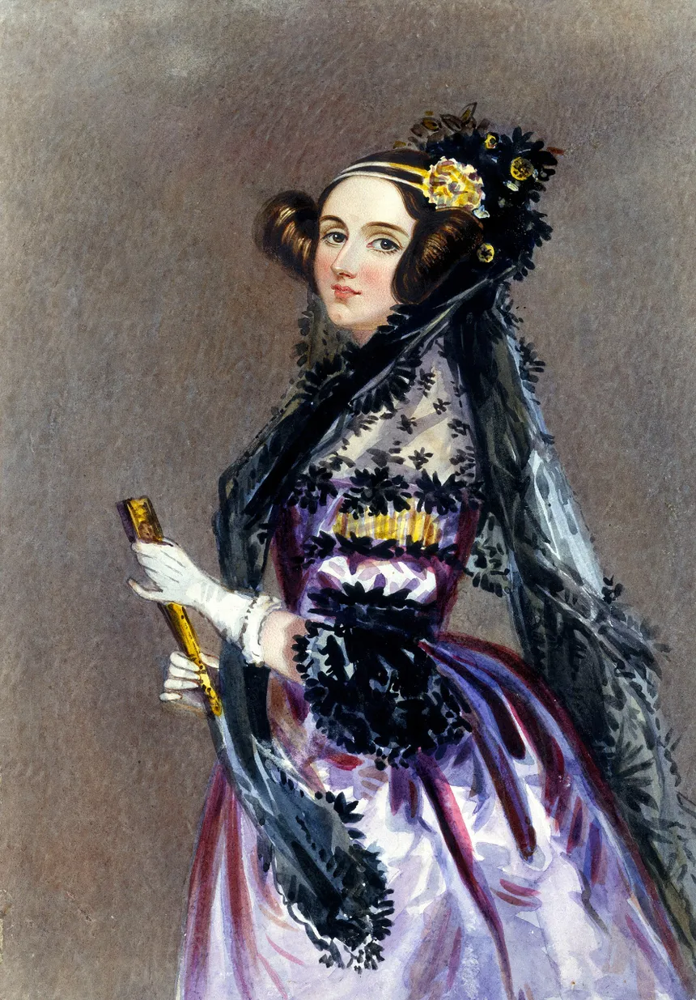
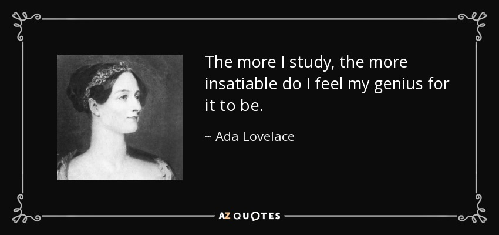
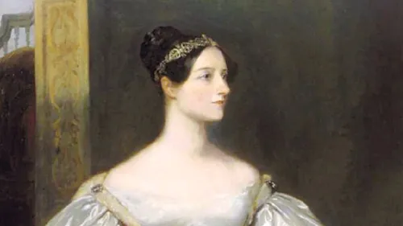

|  |  |  |
Ada Lovelace was the true visionary and the worlds first computer programmer. She was a personal friend of Babbage and was a mathematical genius in every sense of the word. The “enchantress of number” as Babbage liked to call her, had a great interest in Babbage’s analytical engine.
Ada Lovelace, born as Augusta Ada Byron, was the daughter of esteemed poet, Lord Byron and his wife, Lady Byron. Lord Byron was a rebelious wild man that soon left the mariage to seek his own adventures. Lady Byron detested this and everything to do with her former husband, to make sure her child would be nothing like her father she enlisted her the best mathematic tutors she possibly could to fold her into a scholar, far removed from her father. Due to her talent and her resources, she was established as a very intelligent mathmetacian and she openly showed her massive love of numbers when talking to scholars across the continent.
Thanks to her reputation she was invited to Babbage's home to see the fraction of the Difference Engine that he was actually able to produce. When Ada saw the invetnion and realized the implications of the device she was enamored. They soon began to keep in touch with each other as seen by the numerous corespondeces found in their belongings. She was heavily invested in the progress of the machine. She possesed a transcript of a speech about Babbage's analytical engine made by Italian mathmatician, Luigi Menabrea, and translated the speech and than added her own notes which totaled to be twice as long as the original document.
The reason she is kown as the first computer programmer is because she saw the potenial of the engine that not even Babbage himself was ever able to see. In her notes she wrote what is considered the first computer program that could theoretically be used with the machine to solve an equation. Beyond even this however, Ada saw with a vision that far surpassed her own time period as she predicted that the technology could be used to recreate quantities besides numbers such as music. This vision that ended up predicting the future of technology itself is what cements her in the history of computer science and the world itself.
First page Second Page